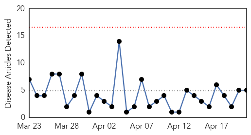
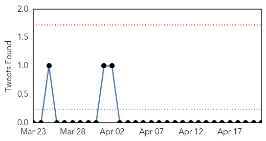

Cholera
30-Day Web Trend
0 alerts, 0 warnings

30-Day Twitter Trend
0 alerts, 0 warnings

Article Locations
Article Confidences

Top Articles:
- 0.999
- PAHO issues update on Cholera in the Americas. CPS advises travellers to Haiti and Dominican Republic to take preventative measures
- 0.993
- At least 30 killed by latest cholera outbreak in Nigeria
- 0.992
- Latest cholera outbreak in Nigeria has killed at least 30
- 0.991
- Cholera Kills 30 in Delta – Daily Times Nigerian Newspaper
- 0.988
- 30 people died in Delta from Cholera outbreak
Top Tweets:
-
No tweets found for Apr 21, 2015
Yellow Fever
30-Day Web Trend
2 alerts, 0 warnings

30-Day Twitter Trend
1 alerts, 0 warnings

Article Locations

Article Confidences

Top Articles:
Top Tweets:
-
No tweets found for Apr 21, 2015